⚡ Essentials
#01
0:00 – 0:42
Essential
Mini Player YT Videos
Save YouTube videos to Notes and watch them in a picture-in-picture mini player while doing other things.
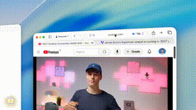
#02
0:42 – 1:00
Essential
Save Websites with Preview
Add web pages as rich card previews instead of plain links — see title, image, and snippet at a glance.
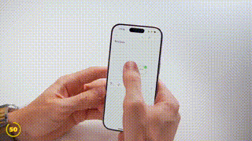
#03
1:00 – 1:29
Essential
Save Websites with Quote
Highlight specific text on a website to save the link and the quote together — perfect for research.
#04
1:29 – 2:44
Essential
Surprising Things You Can Attach
Attach emails, Finder folders, videos, audio recordings (with transcripts), maps, and Apple Music songs directly into notes.
⌚ Apple Watch & Siri
#05
2:44 – 3:07
Apple Watch
View Notes on Apple Watch
Access your Notes directly from your wrist — read, search, and browse without pulling out your phone.
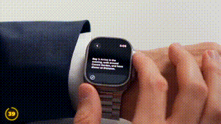
#06
3:07 – 3:17
Apple Watch
Grocery Shopping with Apple Watch
Use checklists for shopping directly from the watch — tap to add items while you're at the store.
#07
3:17 – 3:31
Apple Watch
Create Notes on Apple Watch
Jot down quick ideas using the watch keyboard or voice dictation — hands full? Just speak it.
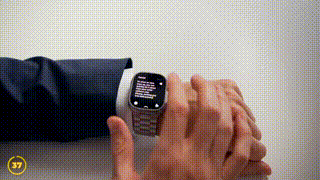
#08
3:31 – 3:44
Apple Watch
Brand-New Notes Complications
Use watch face complications for instant access — add Notes widgets to your watch face for one-tap entry.
#09
3:44 – 3:56
Apple Watch
Create Notes with Siri
Use voice commands to create new notes hands-free — just say "Hey Siri, create a note about..."
🎨 iPad & Productivity Tools
#10
3:56 – 4:15
iPad Pro
Powerful PDF Tricks in Notes
View and manage PDFs inline — including thumbnails, annotations, and seamless page navigation inside notes.
#11
4:15 – 4:37
iPad Pro
Beautiful Handwriting on iPad
Improve handwriting aesthetics with grid lines and the "Improve Handwriting" tool that converts scribbles to clean text.
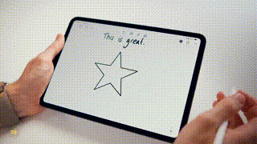
#12
4:37 – 4:56
iPad Pro
Cheat with Math Notes
Solve equations and perform currency conversions automatically — write it by hand, get the answer instantly.
#13
4:56 – 5:06
iPad Pro
Always-Ready Notepad
Tap your locked iPad screen with an Apple Pencil to instantly start a note — no unlock needed, write from anywhere.
📁 Organization & Workflow
#14
5:06 – 5:19
Organization
View Notes in Gallery
Switch from list view to gallery view for larger previews — perfect for visual reference and quick scanning.
#15
5:19 – 5:30
Organization
Quick Note from Control Centre
Launch a new or quick note directly from the Control Centre — one tap from any screen, even paused videos.
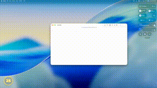
#16
5:30 – 5:37
Organization
Find in Note
Search specifically within the current note using Spotlight-like search — jump to keywords instantly.
#17
5:37 – 5:43
Organization
Use Headings
Use headings to structure and collapse sections of text — great for long-form notes and meeting agendas.
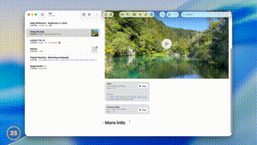
#18
5:43 – 5:50
Organization
Organize with Subfolders
Nest folders inside folders for deeper organization — hierarchy for projects, topics, and categories.
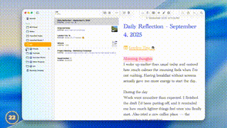
#19
5:50 – 5:56
Organization
Pin Notes
Keep important notes pinned at the top of your list — they stay visible even when sorted by date.
#20
5:56 – 6:08
Organization
Lock Cheeky Notes
Secure private notes with Face ID, Touch ID, or a password — hide personal stuff from prying eyes.
🧠 Advanced Features & Intelligence
#21
6:08 – 6:43
Advanced
Record Calls and Take Notes
Record phone calls and get automatic transcripts — powerful for meetings, interviews, and important conversations.
#22
6:43 – 7:12
Advanced
Use Apple Intelligence in Notes
Use writing tools to rewrite, summarize, or generate text — AI-powered editing right inside Notes.
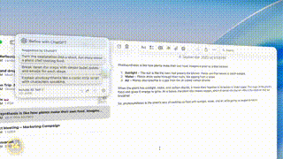
#23
7:12 – 7:36
Advanced
Generate Images in Notes
Use the Image Wand on iPad to turn sketches into AI-generated images — draw it, then watch it come alive.
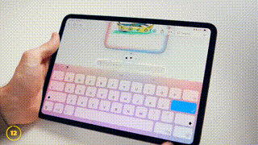
#24
7:36 – 7:54
Advanced
Markdown Import & Export
Manage files via Markdown for better portability — import .md files and export notes as clean Markdown.
✨ Formatting & Collaboration
#25
7:54 – 8:10
Formatting
Change Text Font
Customize your notes with various fonts on Mac — make your notes visually distinct.
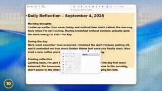
#26
8:10 – 8:21
Formatting
Change Text Color
Add color to your text for emphasis, highlights, and visual organization across your notes.
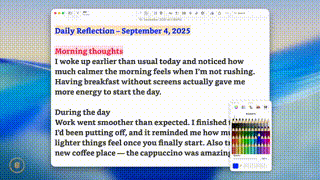
#27
8:21 – 8:33
Formatting
Change Text Size
Adjust text size for different sections — headers, body, captions — all from the Mac toolbar.
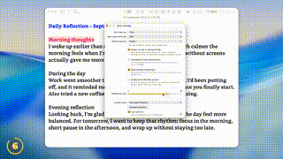
#28
8:33 – 8:49
Formatting
Link Your Own Notes
Link to other notes using the double greater-than (>>) shortcut — create a web of interconnected notes.
#29
8:49 – 9:03
Formatting
Collaborate and Tag People
Share notes and mention collaborators with @mentions for live edits and real-time co-authoring.
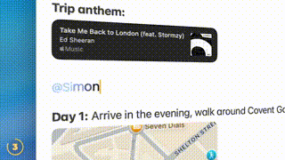
#30
9:03 – 9:14
Formatting
Most Hidden Feature Ever
Toggle the note date between "Date Edited" and "Date Created" by tapping/clicking the date — a secret power-user trick.
#31
9:14 – 9:28
Formatting
This App Makes Notes Even Better
Third-party app recommendations to add slash commands, advanced formatting, and Power User-style workflows.